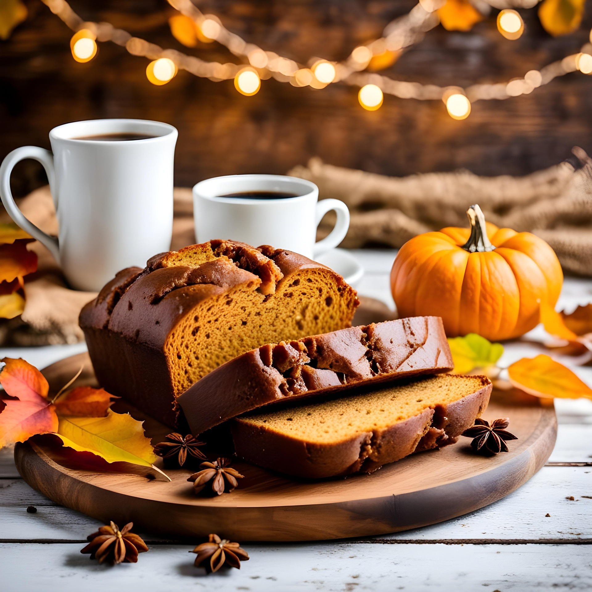

Pumpkin Cake
Chef: Maryam Ahmadi Vostacolaee
A soft and delicious homemade pumpkin cake that is easy to prepare.

Ingredients
-
| 2 cups |
Flour |
| 1 cup |
Sugar |
| 1/2 cup |
Vegetable oil |
| 1 cup |
Cooked and grated pumpkin |
| 3 pcs |
Eggs |
| 1 tsp |
Baking powder |
| 1/2 tsp |
Cinnamon |
| 1/2 cup |
Chopped walnuts (optional) |
Instructions
-
- Preheat Oven: Preheat your oven to 350°F (175°C), and prepare your baking pan by either lining it with parchment paper or lightly greasing it so the cake doesn't stick during baking.
- Prepare Wet Ingredients: In a large mixing bowl, mash the cooked and grated pumpkin until smooth, then add the softened butter, sugar, and brown sugar. Beat until creamy and well combined, ensuring no lumps remain.
- Add Eggs and Vanilla: Add the eggs one at a time, beating well after each addition. Then add the vanilla extract and mix until evenly blended.
- Combine Dry Ingredients: In a separate bowl, whisk together flour, baking powder, baking soda, cinnamon, and salt to avoid clumps.
- Mix Wet and Dry Ingredients: Gradually add the dry mixture to the wet mixture, folding gently until just combined. Avoid overmixing.
- Add Optional Ingredients: Fold in chopped walnuts or other optional ingredients evenly.
- Pour Batter into Pan: Transfer the batter into the prepared baking pan and level with a spatula.
- Bake the Cake: Place in the oven and bake 50-60 minutes, or until a toothpick comes out clean. Edges should be slightly golden.
- Cool the Cake: Let cool 10-15 minutes in the pan, then transfer to a wire rack to cool completely.
- Serve and Enjoy: Slice and serve with tea, coffee, or as a dessert.
Tips
-
- For a softer cake, add a little extra oil.
- Sprinkle powdered sugar on top if desired.
- The quality of the pumpkin affects the flavor significantly.